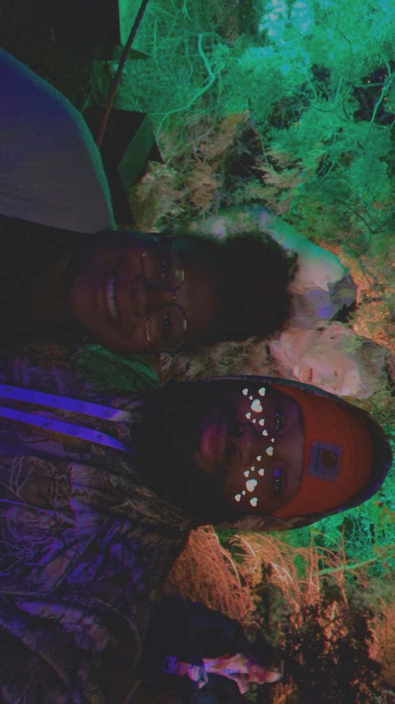

My Biggest Support System
Thank you guys for all you have done for me during my schooling journey! We all know that this has been a long time coming but the time is finally here. Through the basic pre-reqs, to spending so much time in nursing, to social work then finally deciding on what i should've started with...Computer Science! I love you guys with all of my heart and couldnt of done it without you whether you "made a impact" or not.Just being there was more than enough. -Thank you.